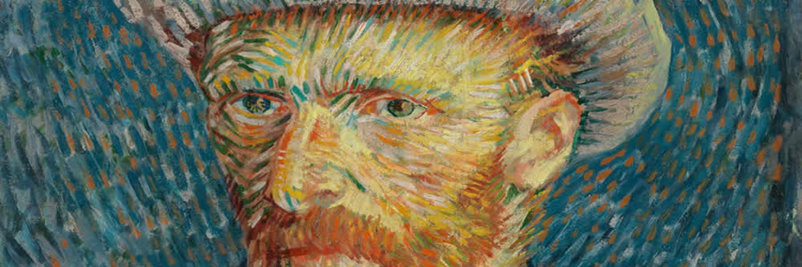

Loving Vincent( Com Amor, Van Gogh )
O enredo do filme desenrola-se através de entrevistas às figuras mais próximas do pintor e através de reconstruções dramáticas dos eventos que levaram à sua morte. No filme são apresentadas 120 das melhores pinturas de Vincent Van Gogh. Já a trama é desenhada a partir de cartas escritas pelo próprio Van Gogh escreveu numa das suas últimas cartas: "Bem, a verdade é que não conseguimos expressar-nos se não através dos nossos quadros", e é aquilo que se faz aqui deixando os seus quadros contar a história da sua intimidade, e sobretudo daquilo que lhe aconteceu.
Data de lançamento: 16 de novembro de 2017 (Brasil)
Direção: Dorota Kobiela, Hugh Welchman
Música composta por: Clint Mansell
Bilheteria: 5,5 milhões USD
Produção: Hugh Welchman, Sean M. Bobbitt